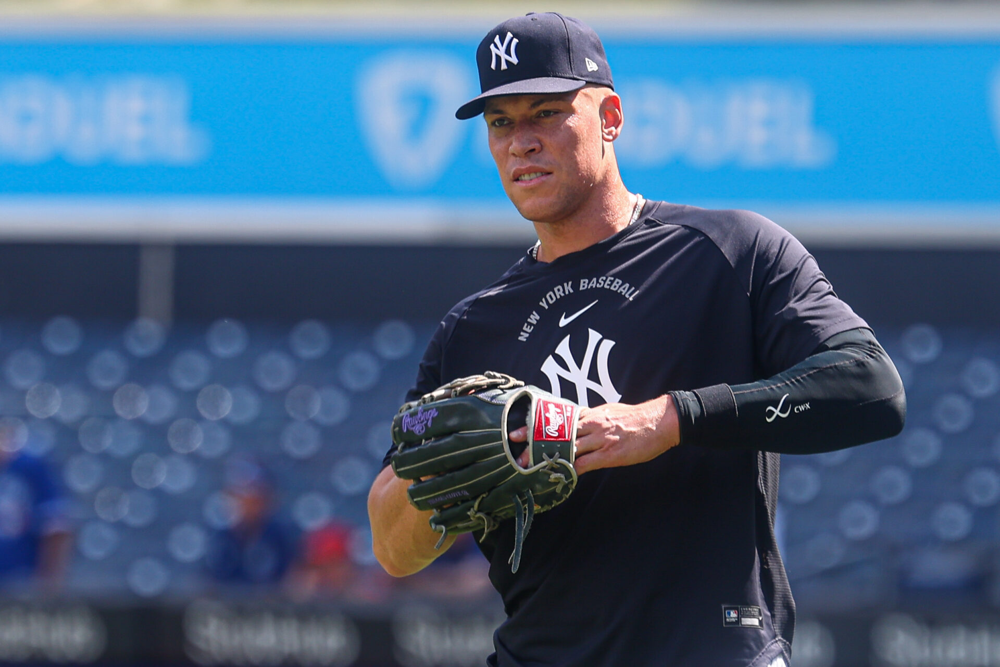
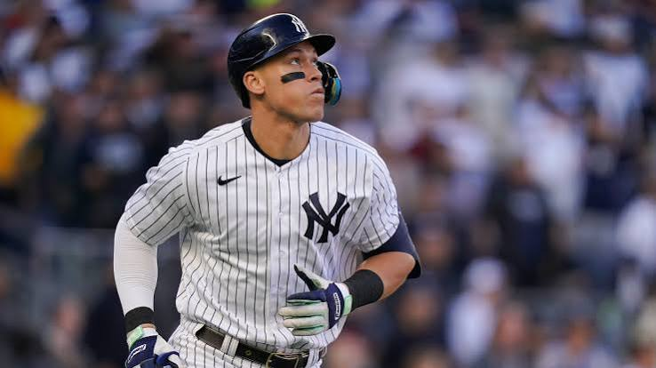

Carlos José Villanueva Ramos
📅 27 de agosto 2026
⚾Aaron Judge apunta a regresar en septiembre sin pasar por Ligas Menores

Retorno directo al primer equipo:
El capitán de los Yankees, Aaron Judge, confía en reintegrarse al roster principal durante el mes de septiembre sin necesidad de hacer una gira de rehabilitación en filiales, asegurando que prefiere aprovechar sus turnos de bateo directamente en las Grandes Ligas.
Evolución favorable:
Tras perderse varios meses por una fractura de costilla sufrida al zambullirse en abril, Judge ha comenzado a intensificar sus entrenamientos, haciendo carreras al aire libre, atrapando elevados y realizando sus primeros swings en jaula bajo techo.
Planes en el jardín derecho: Tanto Judge como el manager Aaron Boone prevén que, una vez recuperado, regrese a defender el jardín derecho con precaución, dejando el puesto de bateador designado libre para alternar a otros jugadores de la plantilla.

AARON JUDGE ENDS IT 👨⚖️
— MLB (@MLB) May 24, 2026
WALK-OFF HOME RUN IN THE BRONX pic.twitter.com/yxFisjdpmo